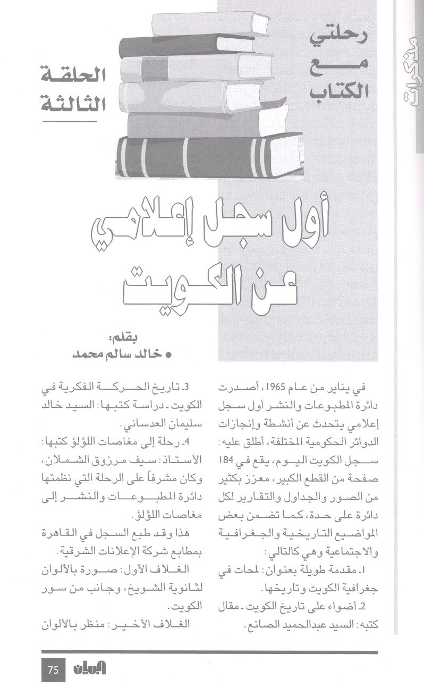
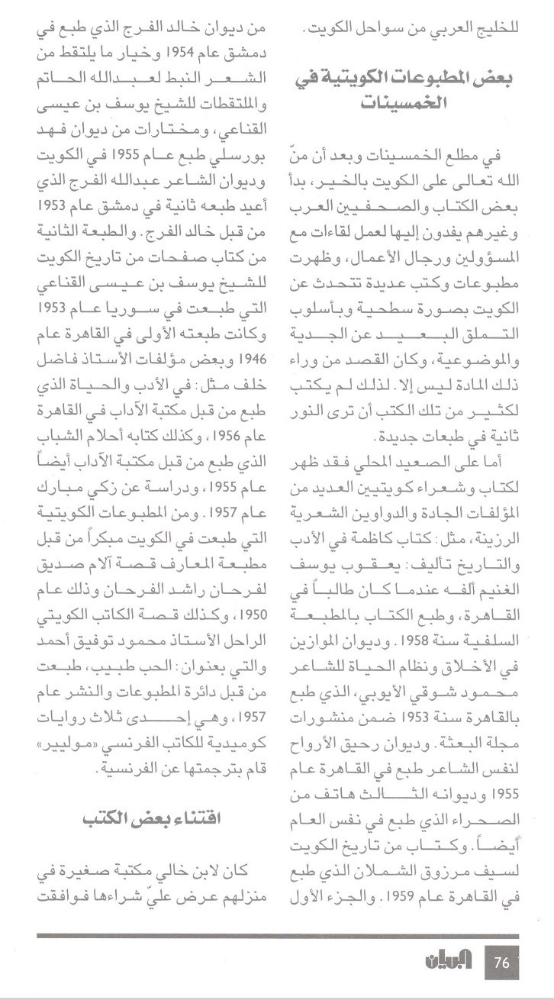
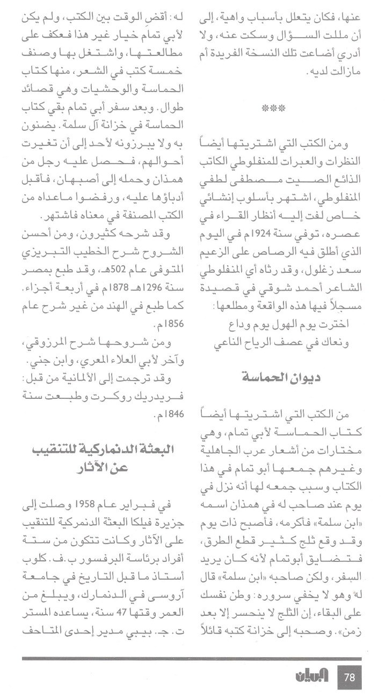

مجلة البيان، التاريخ غير ظاهر في الصفحات المرسلة · صفحات من مجلة البيان (الكويت)، باب «مذكرات: رحلتي مع الكتاب»، الحلقة الثالثة، بقلم خالد سالم محمد، ص ٧٥ إلى ٧٨
«رحلتي مع الكتاب»: نسخة نادرة من دليل المحتار لعيسى القطامي، وطبعتا عبدالوهاب ولولوة
ما هي
يتذكر الكاتب الكتب التي اشتراها، ومنها «دليل المحتار في علم البحار لربان الكويت الأول عيسى القطامي المتوفى عام ١٩٢٩م»، وهو من أهم مراجع الملاحة البحرية في الخليج العربي وبحر العرب وسواحل الهند وشرقي أفريقيا والبحر الأحمر وخليج عمان. وقد طبعه مؤلفه أول مرة في مطبعة دار السلام في بغداد سنة ١٣٣٤هـ، أما نسخة الكاتب التي اشتراها من ابن خاله فهي طبعة لجنة التأليف والترجمة والنشر في القاهرة، ويصفها بأنها نادرة جدا، فقد ذكر عبدالوهاب عيسى القطامي في مقدمة الطبعة الثالثة التي أشرف عليها وجعل لها ملحقا أسماه «الصيد والتنقل»، وطبعت في مطبعة حكومة الكويت سنة ١٩٦٤م، أنه لم يعثر على نسخة من طبعة القاهرة، وكذلك قالت الأستاذة لولوة القطامي إنها لم تحصل على نسخة منها عند طباعة الكتاب للمرة الرابعة. وقد أعار نسخته لصديق ولم تعد إليه (ص ٧٨).
أهميتها
شهادة مباشرة على ندرة الطبعة الأولى من دليل المحتار، وعلى طبعات العائلة اللاحقة: الثالثة بإشراف عبدالوهاب عيسى عام ١٩٦٤م، والرابعة على يد لولوة عبدالوهاب.
من المقصود
يصف المقال لولوة بأنها «حفيدة الربان عبدالوهاب عيسى القطامي»، وهي لولوة عبدالوهاب القطامي، ابنة عبدالوهاب عيسى وحفيدة عيسى.
صور الصفحات




المصادر
خالد سالم محمد، «رحلتي مع الكتاب»، الحلقة الثالثة، مجلة البيان (الكويت)، ص ٧٥ إلى ٧٨
كيف كُتب هذا النص: الصفحتان ٧٦ و٧٨ لا تذكران العائلة، وعرضتا لأن الحديث عن دليل المحتار يبدأ في الصفحة ٧٦ وينتهي في الصفحة ٧٨. ولا يظهر رقم العدد وتاريخه في الصفحات المرسلة.
افتح في الموقع التفاعلي